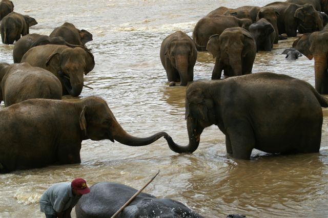

アジアの風に吹かれて
自分だけの個人レッスンを。
今の英語力のままで大丈夫。ホームステイとマンツーマンで、あなたに合わせた学びを。
- 運営22年
- 全コース個人レッスン
- 一人参加歓迎
お電話でのご相談：03-6770-6191
数字で見る、世代を超えた実績とサポート
22年
運営の実績
13歳〜73歳
幅広い年齢の参加実績
1対1
全コース個人レッスン
24時間
現地サポート（日本語）
公的機関の語学研修の実績もあります。
行き先を比べる
スリランカとネパールは、それぞれ違う魅力があります。
「英会話力（スピーキング）を強化するには、個人レッスンを有効に活用するのが一番です。アジアの発展途上国での滞在は、日本の常識を見直す貴重な体験にもなります。」
Dr.アーナンダ・クマーラ

スリランカ
インド洋の真珠と呼ばれ、英語が広く普及している環境。長年の実績があるからこそ、素朴な暮らしと個人レッスンを組み合わせた滞在が叶います。

ネパール
ヒマラヤのふもと、深い文化と人の温かさ。異文化体験やボランティアを通じて、短期から中長期まで、自分らしいペースで過ごせるのが魅力です。
参加者レポート
ご参加いただいた方の現地での1日の流れと体験レポートです。国・時期はページごとに異なります。
専門家・メディアからの信頼
Dr.アーナンダ・クマーラ氏
Lanka Nippon Biztech Institute 学長
「アジアでは物価が安く、個人レッスンを有効に活用できます。現地滞在は語学だけでなく、世界の現状を考える機会にもなります。」
推薦文の全文を見る
俳優・三波豊和氏 インタビュー掲載
第三者メディアによる代表・逢坂光子氏へのインタビュー記事です。プログラムの背景や想いを、外部取材を通じてご確認いただけます。
goodpointの記事を開く